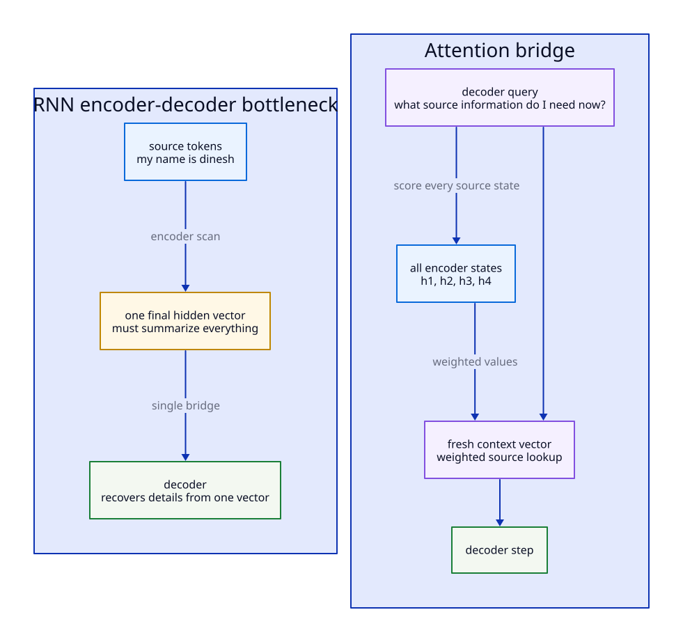
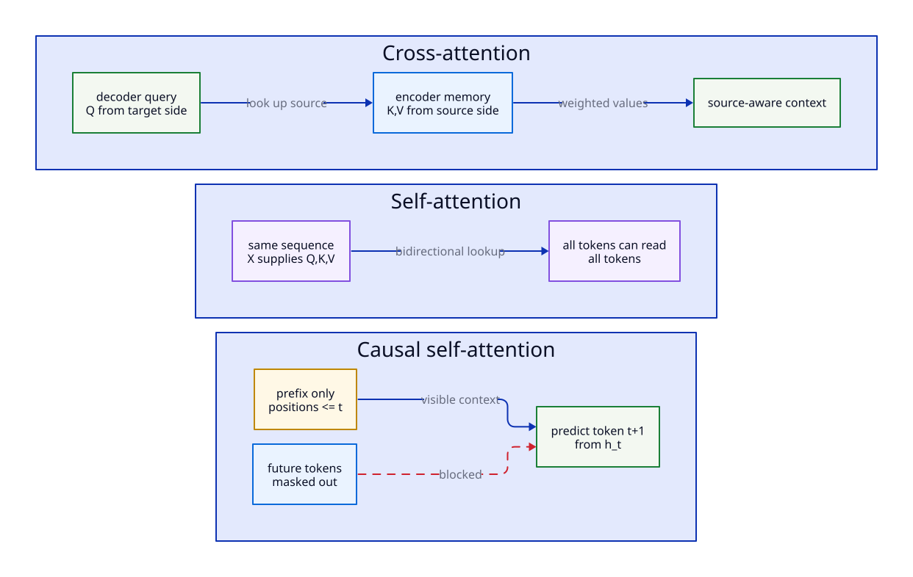
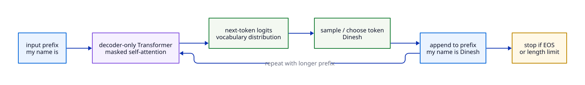
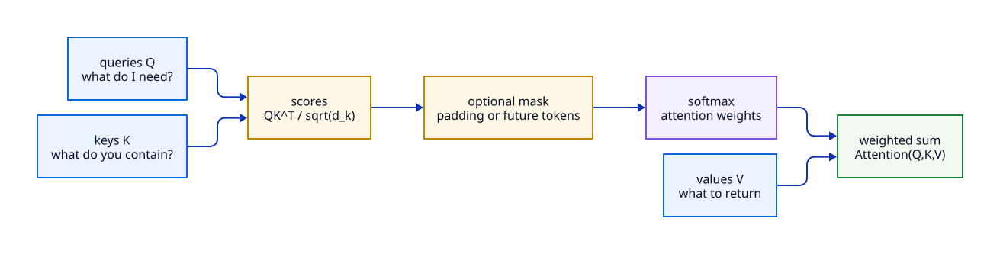
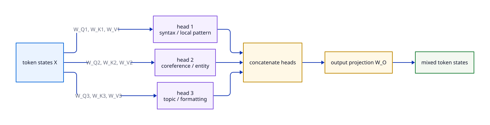
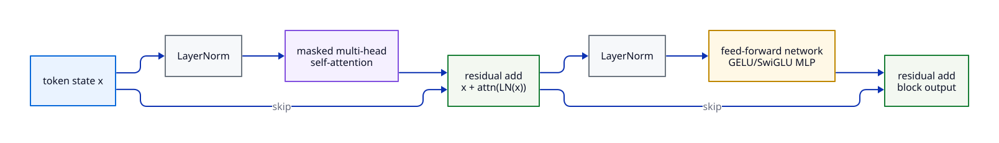
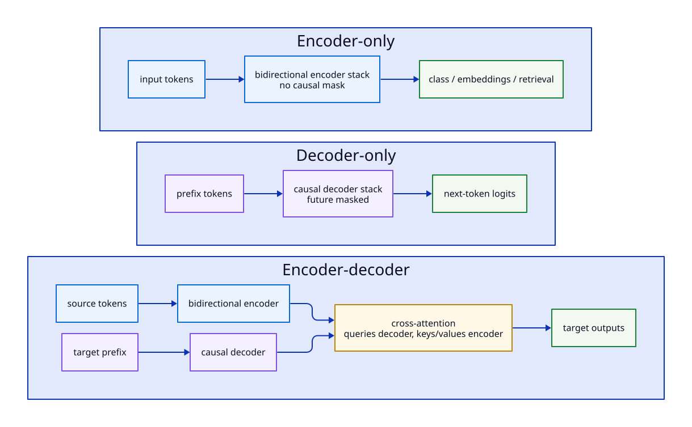
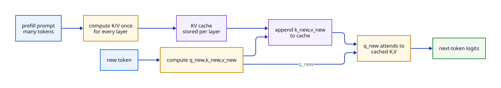

Read this chapter as one continuous design path. We are not introducing attention as a separate trick. We are answering the question left open by GRU/LSTM: if a decoder needs a specific old token, why force that information to survive only through recurrent memory? Cross-attention lets a decoder look up source states directly. Self-attention then applies the same lookup idea inside a single sequence. Causal self-attention finally makes that lookup safe for next-token generation.
In the RNN translation chapter, the encoder read my name is dinesh
and passed a final hidden state to the decoder. That works as a first mental
model, but it has a bottleneck: the decoder must recover every useful source
detail from one vector. For a short sentence this is manageable. For a long
paragraph, one compressed state is a weak memory interface.
LSTMs reduce the damage because their cell state can preserve information better than a vanilla RNN or a GRU. But even an LSTM encoder-decoder still asks the decoder to recover source details through recurrent state. The next idea is to keep every encoder state available and let the decoder choose which ones matter at each output step.

Cross-attention is the easiest form to understand after RNN translation. The decoder is currently trying to produce a target token. It builds a query: “what source information do I need right now?” The encoder states provide keys: “what information can I match against?” and values: “what information should I return if matched?”
| Object | Comes from | Meaning in translation |
|---|---|---|
| Query \(Q\) | Decoder hidden state | The output side asking what source context it needs for this target step. |
| Keys \(K\) | Encoder states | Search handles for each source token/state. |
| Values \(V\) | Encoder states | The information blended into the decoder context vector. |
For the example my name is dinesh → mon nom est dinesh,
when the decoder is about to produce dinesh, its query should
strongly match the encoder state for the source name token. The attention
weights are learned, soft alignments; they are not hand-coded word links.
Cross-attention still assumes two sides: a source memory and a decoder query. That is perfect for translation, but it raises the next question: if attention is just content-based lookup, do we need a recurrent encoder at all? Could each token in a sentence look directly at the other tokens and build its representation in parallel?
Cross-attention has two sides: decoder queries, encoder keys/values. Self-attention removes that separation. The same sequence supplies queries, keys, and values:
Now each token can ask every token in the same sequence for context. In an encoder, this is usually bidirectional: every token can look left and right. In a decoder-only language model, this must be causal: each position can look only at itself and earlier positions.
This is the move from “decoder looks at encoder memory” to “tokens are the memory.” Self-attention removes the recurrent scan inside the encoder because all token-to-token relationships can be scored at once. That is why Transformers train so much more efficiently than RNNs on modern hardware. The price is that attention by itself has no sense of order and, for generation, no built-in protection against peeking at future tokens. Those two pressures lead to positional encoding and causal masking.

If self-attention lets every token look at every other token, a language generator needs one more rule: the future must be invisible. GPT is a decoder-only Transformer: a stack of masked self-attention blocks plus feed-forward networks. It is trained to predict the next token from the previous tokens. The important correction is that position \(t\) can attend to positions \(\le t\), and its hidden state is used to predict token \(t+1\). It does not peek at future target tokens.
| Prefix available at a position | Training target |
|---|---|
my | name |
my name | is |
my name is | Dinesh |
my name is Dinesh | <EOS> or next punctuation/token |
During training, the full sequence is processed in parallel with a causal mask. During inference, generation is autoregressive: predict one token, append it, then predict the next token from the extended prefix.
| Phase | What the model receives | What it predicts | Why it matters |
|---|---|---|---|
| Training | A full token sequence, processed in parallel under a causal mask. | The next token for every visible prefix position. | Efficient learning: one forward pass creates many next-token training examples. |
| Inference step 1 | [my, name, is] |
A distribution where Dinesh may be the selected token. |
The model emits one token, not a whole final sentence in one atomic action. |
| Inference step 2 | [my, name, is, Dinesh] |
The next distribution, perhaps selecting .. |
The generated token becomes part of the next input prefix. |
| Stopping | [my, name, is, Dinesh, .] |
<EOS>, another token, or a stop caused by length limits. |
Generation repeats until a stop condition is met. |
| KV caching | The new token plus cached keys/values from earlier positions. | The next-token distribution without recomputing all old attention states. | Same conceptual loop, much lower decode cost in real systems. |

# Conceptual GPT inference loop.
# Real systems batch requests, keep per-layer KV caches, and use sampling controls.
tokens = tokenize("my name is")
while len(tokens) < max_len:
logits = gpt(tokens) # simple mental model: full prefix
next_logits = logits[-1] # distribution for the next token
next_token = sample(next_logits, temperature=0.8, top_p=0.95)
tokens.append(next_token) # feed output back as input
if next_token == EOS_ID:
breakNow the architectural flow is complete enough to name the math. Cross-attention, self-attention, and causal self-attention are not three unrelated mechanisms. They are the same query-key-value operation with different sources for \(Q,K,V\) and different masks. The next section writes that common operation once.
Think of attention as a dictionary lookup that is differentiable.
That's it. The whole Transformer is this operation, stacked, with a small feed‑forward network in between, and residual connections + LayerNorm.
Stack the queries, keys and values into matrices $Q \in \mathbb{R}^{n\times d_k}$, $K \in \mathbb{R}^{n\times d_k}$, $V \in \mathbb{R}^{n\times d_v}$ where $n$ is the sequence length. Then:

The $\sqrt{d_k}$ scaling keeps the dot products from growing too large with dimension, which would push softmax into a near‑one‑hot regime and kill the gradients. Implemented in PyTorch:
import torch, torch.nn.functional as F
def scaled_dot_product_attention(Q, K, V, mask=None):
d_k = Q.size(-1)
scores = (Q @ K.transpose(-2, -1)) / d_k**0.5 # (..., n, n)
if mask is not None:
scores = scores.masked_fill(mask == 0, float("-inf"))
weights = F.softmax(scores, dim=-1) # (..., n, n)
return weights @ V # (..., n, d_v)
For language modeling, position $i$ may only attend to positions $\le i$. The mask is the lower triangular matrix of ones; everything above the diagonal is set to $-\infty$ before softmax.
n = Q.size(-2)
causal = torch.tril(torch.ones(n, n, device=Q.device))
out = scaled_dot_product_attention(Q, K, V, mask=causal)
One attention operation gives one way to judge relevance. That is already more flexible than recurrent state, but language has many relationships at once: subject-verb agreement, reference resolution, local syntax, topic, and formatting. This leads directly to multi-head attention.
One attention head learns one notion of relevance. Real language has many in parallel — syntactic agreement, coreference, topic, etc. Multi‑head attention runs $h$ attention operations in parallel on linear projections of $Q, K, V$ into smaller subspaces, then concatenates and projects back:

import torch, torch.nn as nn
class MultiHeadAttention(nn.Module):
def __init__(self, d_model, n_heads):
super().__init__()
assert d_model % n_heads == 0
self.h, self.d_k = n_heads, d_model // n_heads
self.W_q = nn.Linear(d_model, d_model, bias=False)
self.W_k = nn.Linear(d_model, d_model, bias=False)
self.W_v = nn.Linear(d_model, d_model, bias=False)
self.W_o = nn.Linear(d_model, d_model, bias=False)
def forward(self, x, causal=True):
B, N, _ = x.shape
def split(t): return t.view(B, N, self.h, self.d_k).transpose(1, 2)
Q, K, V = split(self.W_q(x)), split(self.W_k(x)), split(self.W_v(x))
out = F.scaled_dot_product_attention(Q, K, V, is_causal=causal)
out = out.transpose(1, 2).contiguous().view(B, N, self.h * self.d_k)
return self.W_o(out)
F.scaled_dot_product_attention dispatches to
fused kernels (FlashAttention‑2, memory‑efficient attention) where
available. Hand‑rolling the einsum version is good for understanding,
not for production.
is_causal=True everywhere.
Multi-head attention can learn several kinds of relationships, but the operation still treats the input as a set unless
we give it position. If the tokens my name is are shuffled, self-attention alone has no built-in reason to know
the order changed. That is the next missing piece.
Self‑attention is permutation‑equivariant — shuffle the input tokens and you get the same shuffled output. Language is not permutation‑invariant, so we add positional information.
Add a fixed sinusoidal vector to each token embedding before the first layer:
Pros: simple. Cons: weak length extrapolation; baked into embeddings.
RoPE rotates pairs of dimensions of $Q$ and $K$ by an angle proportional to the position. Because it acts on $Q$ and $K$ multiplicatively rather than additively on the embedding, the dot product $Q_m^{\top} K_n$ becomes a function of the relative position $m - n$:
This often improves long‑context behavior and is why many modern open‑weights LLMs use it. Variants like YaRN and NTK‑aware scaling stretch RoPE's effective range to extend a 4k‑trained model to 32k+ tokens at inference.
Once tokens can read each other and the model knows where those tokens sit, the rest of the Transformer block is engineering around stable deep learning: residual connections preserve signal, LayerNorm controls scale, and the feed-forward network transforms each token representation after attention has mixed context into it.
One block (decoder‑only flavor) is:
class Block(nn.Module):
def __init__(self, d_model, n_heads, d_ff):
super().__init__()
self.ln1 = nn.LayerNorm(d_model)
self.attn = MultiHeadAttention(d_model, n_heads)
self.ln2 = nn.LayerNorm(d_model)
self.ff = nn.Sequential(
nn.Linear(d_model, d_ff), nn.GELU(),
nn.Linear(d_ff, d_model),
)
def forward(self, x):
x = x + self.attn(self.ln1(x)) # pre‑norm residual
x = x + self.ff(self.ln2(x))
return x
Stack $L$ blocks, prepend a token‑embedding + positional encoding, append a final LayerNorm and an unembedding (often tied to the input embedding), and you have a GPT‑style language model.

The same block can be arranged into three families depending on what information is allowed to flow. If the whole input is known, use bidirectional encoder attention. If the model must generate left-to-right, use causal decoder attention. If the task has a separate source and target sequence, combine a bidirectional encoder, a causal decoder, and cross-attention.
| Variant | Attention pattern | Examples | Used for |
|---|---|---|---|
| Encoder‑only | Bidirectional (no mask) | BERT, RoBERTa, DeBERTa, modern embedding models | Classification, embeddings, retrieval |
| Decoder‑only | Causal mask | GPT‑x, LLaMA, Mistral, Qwen, Gemma, Claude, DeepSeek | Generation, chat, code, agents |
| Encoder‑decoder | Bidirectional encoder + causal decoder + cross‑attention | T5, FLAN‑T5, BART, original NMT Transformer | Translation, summarization, seq‑to‑seq |

At training time you process the whole sequence in parallel. At generation time you produce one token at a time. Naively you would recompute all of $K$ and $V$ for every prefix — quadratic per token. Instead you cache the per‑layer $K$ and $V$ tensors:

During decode, the KV cache is a major reason LLM inference often becomes
memory-bandwidth-bound: every new token must read the cached keys and values.
Prefill over a long prompt can still be compute-heavy. The cache is also why
context length costs RAM (each extra token adds roughly
2 · n_layers · n_kv_heads · d_head · dtype_bytes per request; with
MQA/GQA, n_kv_heads can be smaller than the number of query heads).
# Cached decode sketch.
# Prefill computes K/V for the prompt once. Each later step only computes
# the new token's q/k/v and attends q_new against cached K/V.
tokens = tokenize("my name is")
logits, cache = gpt_prefill(tokens) # cache stores per-layer K/V for the prompt
next_token = sample(logits[-1])
while next_token != EOS_ID:
tokens.append(next_token)
logits, cache = gpt_decode_step([next_token], cache=cache)
next_token = sample(logits[-1])KV caching fixes wasted recomputation during generation, but it does not make attention free. Long context still means more cached keys and values to read, and full attention over long prompts still has heavy memory traffic. That pressure is why modern LLM systems use optimized attention kernels and smaller key/value layouts.